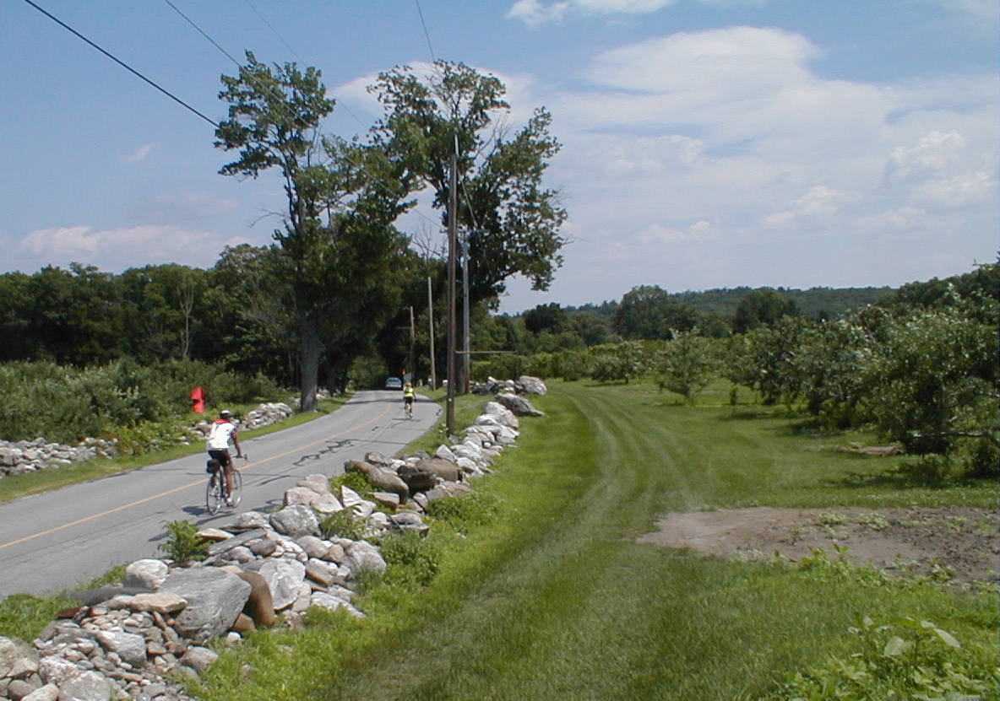

Day 47: June 28, Greenfield, MA to Lexington, MAPrevious Day - Home - Next Day Photo of the DayRiding past the orchards along Nagog Hill Road. Keegan's LogDay 47: June 28, Greenfield, MA to Lexington, MA Mileage: 89.81 milesWeather: Hot, Mostly sunny, Light tailwind Vertical Climb: 2800 feet Riding Time: 5:55 Today was a long day, almost 90 miles. It heated up quickly again, though today wasn't quite as hot as yesterday, it was still over 90 degrees. We had a lot of hills today too, the roads went up and down, side to side, hardly ever going in a straight line. It was a tough day, but we made it. Breakfast was at Bickford's, they were amazingly fast, and were were leaving for the hotel by 6:45. We left at the strike of 7:10, off for the Massachusetts hills. The ride was pretty, thick trees lined both sides of the street for most of the trip. Our first stop was at a small general store, we sat at a table while a local man told us about the dairy farm he had sold a quarter-decade ago. The sag was another 15 miles, at 45 miles into the ride. The sag was in the middle of a bike race, we watched riders whiz by as we sat and enjoyed our last sag stop. We sprinted away from the sag, trying to avoid being passed by the cyclists racing by. We left their route about 3 or 4 miles later, then continued along 2A as we had been all morning. Lunch was at O'Hanlan's Pub in Ayer, we each had a shepherd's pie, one of the best lunches we've had in a while. We left just as the sweep was riding by, only 25 miles to go to the hotel. We left the highway and took the backroads for a stretch, the route was definitely winding but always scenic. We passed Concord, a town just oozing with history, but of course we were too tired to stop for a look around. We reached the hotel at just before 90 miles, the Boston traffic got pretty thick as we got closer. Mom and Lauren arrived not long after we did, back from their New England vacation. Route rap brought a lot of introductions, may visitors came for the last day. Dinner was at the Yangtze River, a Chinese buffet in downtown Lexington. After dinner each rider got to stand and say something, share a story, say thanks, etc... It was a nice informal occasion, one of the last times we'll be eating together. Tomorrow is the big banquet, the staff has more planned for tomorrow. Speaking of tomorrow, at 9:30 we'll be arriving at Revere Beach on the Pacific Ocean, thus completing our 3,400 mile journey (okay, except 2 day in Kansas). We only have to ride 21 miles, not exactly a grueling day, and the last 5 miles will be as a large group, so we all arrive at the beach together. Here's hoping I don't get a flat when we ride in as a group... Phil's LogPhew, what a day! 89 miles doesn't seem like much any more, but today it was a lot. We were told there were 2,800 feet of climbing. That's not so bad either. Together the sum had meaning. Add to it 90¡ with high humidity. Add to that a lot of roads that were designed hundreds of years ago by horses wandering from farm to farm. Add a lot of traffic, and road signs that veered everywhere. Today was a tough one. We rode mostly on Route 2A through northern Massachusetts into the northern suburbs of Boston. It is fairly densely settled country, compared to everywhere except LA. The towns come as fast as those traveling down the Boston Post Road from Port Chester to The City - there is rarely a section that is not in some settled area. And there is a lot of old architecture. Many of the cities, Gill, Orange, Athol, Gardner, Fitchburg had their buildings close to roads that were not designed for cars. More often than not, intersections were "y"'s, with one road descending to the left and the other rising to the right. If in doubt, follow 2A. That rule was valuable, but DON'T follow 2! It was a busy ride, full of visual information and interesting sights. Many an old factory was built immediately upon a river. One, the Starett Tool Company in Athol, looks like it has been there for centuries, and probably has. You could see that the workers a hundred years ago lived within a winter's morning walk to the factory, and many no doubt still do. Keegan and I asked the waitress, Lisa, at the J.B. Hanlen Pub in Ayer a question. We would soon ride on Nagog Hill Road and I asked her what a Nagog was. She wasn't sure, but it struck me that the people who live here may not appreciate some of the funny names of towns and roads, or how strangely the countryside is laid out in the eyes of a Hoosier. She told us that she too was a bicyclist so we gave her the link to CrossRoads. She brought us wonderful Shepherd's Pie. Somehow we made it through the very detailed route sheet over French King Bridge, Nashoba Road, Nagog Hill Road, Pope Road, Strawberry Hill Road and Barret's Mill Road to Bedford Avenue and our Holiday Inn room. Sue and Lauren joined us for the Rider's Banquet tonight. Tracy, poor Tracy, our tour director, had severely cut her finger last evening requiring stitches and was obviously in quite a bit of pain today. Regardless, she was honored this evening by all of the riders. She and the staff of CrossRoads, which includes Julie, Pat, Trevor, and Rick do an absolutely wonderful job of providing for their guests. One of the things that comes in great measure is encouragement, and a stage for fun. They are wonderful, simply wonderful. I just put in for our usual 5:30 wake up call. Time to sleep. But I will add that I sure wish this room telephone had feet on it. Every time you pick up the phone it follows the cord, slides off the table, and heads or the floor. Little stuff goes wrong, but the overall works well. Good night. |
{kind=link}